Lo que harás

En este proyecto, diseñarás y crearás un personaje con ojos locos 👀. Los ojos grandes y locos del personaje seguirán el puntero para darle vida a tu personaje.
Vas a:
- Hacer un proyecto con el que sea divertido jugar
- Crear tu propio personaje
- Codificar tu proyecto usando objetos, código y bucles
ReproducirMueve el ratón por el escenario. ¿Qué pasa cuando te mueves entre los ojos de Gobo? ¿Qué pasa cuando haces clic en diferentes partes del proyecto? |
Obtén ideas
Antes de hacer tu proyecto, investiga estos ejemplos que te pongo. Haciendo clic en donde pone "Ver dentro", puedes acceder al código Scratch y ver cómo están hechos.
No te comas el donut
Pulsa en ver dentro para ver cómo está hecho.
Sporg
Pulsa en ver dentro para ver cómo está hecho.
Pez globo loco
Haz clic en el pez globo, el sombrero, bufanda, fondo y globo ocular. Pulsa en ver dentro para ver cómo está hecho.
Guante de portero loco
Haz clic en el fondo y los ojos. Pulsa en ver dentro para ver cómo está hecho.
Diseña tu personaje y el fondo
Usa tus habilidades de diseño para agregar un objeto de personaje y un fondo adecuado.
| Crea un proyecto nuevo en Scratch. Puedes usar directamente este enlace y Scratch se abrirá en otra pestaña del navegador. |
Recuerda iniciar sesión en Scratch si no lo has hecho ya y cambia el nombre de tu proyecto para llamarlo Ojos locos.
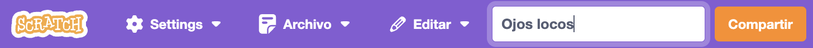
Crea tu personaje
¡Ha llegado la hora de demostrar tu creatividad! Elimina el objeto gato que tienes por defecto en el proyecto, porque vas a utilizar tu propio personaje. Esta vez no vas a usar un personaje predefinido, sino que lo vas a crear tú desde cero. Tienes que diseñar un personaje que sea original y bonito.
Para hacerlo, vas a usar las herramientas de dibujo de Scratch. Añade un objeto a tu proyecto seleccionando la herramienta Pinta que aparece al colocar el puntero del ratón sobre el icono de añadir objeto a Scratch, como te muestro en esta imagen:
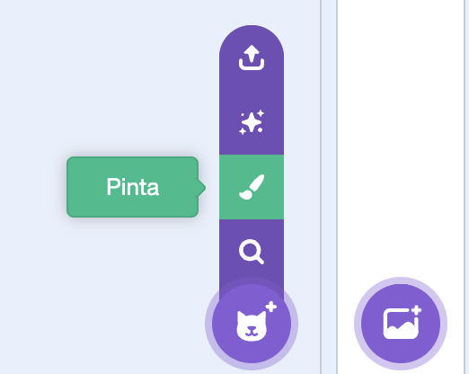
El objeto aparecerá y Scratch te enseñará directamente la pestaña de Disfraces para que pintes el objeto. Te voy a dar consejos para que puedas dibujar lo mejor posible tu personaje:
Círculo
Haz clic en la herramienta Círculo para dibujar un círculo.
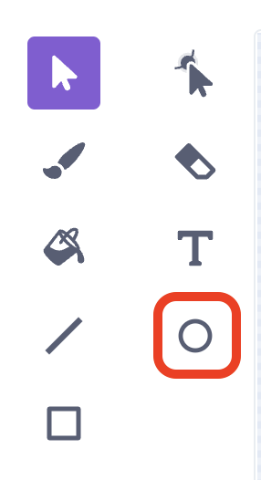
Al dibujar de forma libre con esta herramienta verás que se forman óvalos en vez de círculos. Mantén presionada la tecla Mayúsculas (Shift o ⬆) en tu teclado si quieres dibujar un círculo perfecto.
Rectángulo
Haz clic en la herramienta Rectángulo para dibujar un rectángulo.
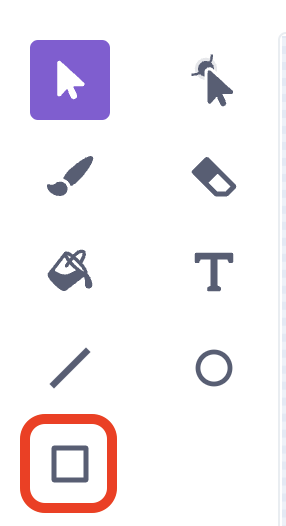
Mantén presionada la tecla Mayúsculas (Shift o ⬆) en tu teclado si quieres dibujar un cuadrado perfecto en vez de un rectángulo.
Triángulo
Para dibujar un triángulo, primero tienes que dibujar un rectángulo y luego modificarlo eliminando el vértice que quieras. Para ello, utiliza la herramienta Volver a dar forma. Te explico como hacerlo con esta animación:
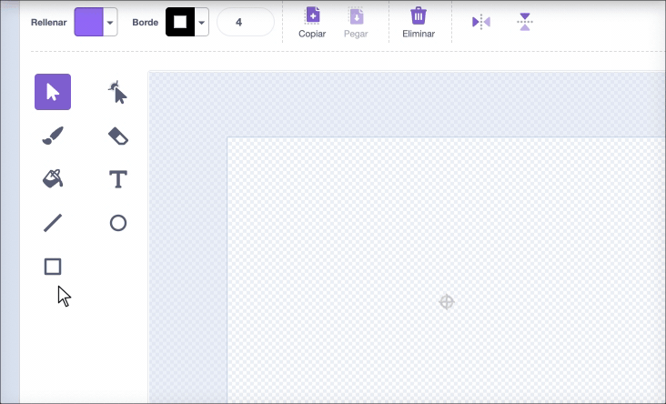
La herramienta volver a dar forma no solo te permite hacer triángulos, sino también obtener formas creativas. ¡Experimenta con ella!
Colorear
Por defecto, Scratch usará un color para rellenar las formas que dibujes, pero puedes utilizar la herramienta relleno para colorear cualquier forma con el color que quieras y la herramienta borde para cambiar tanto el color como el grosor del borde.
Aquí te dejo un ejemplo de cómo usar estas herramientas para colorear una forma:
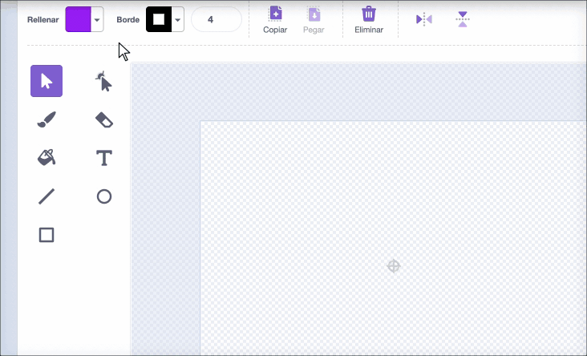
Si quieres que algo no tenga ningún color, sino que sea transparente, simplemente selecciona el color transparente:
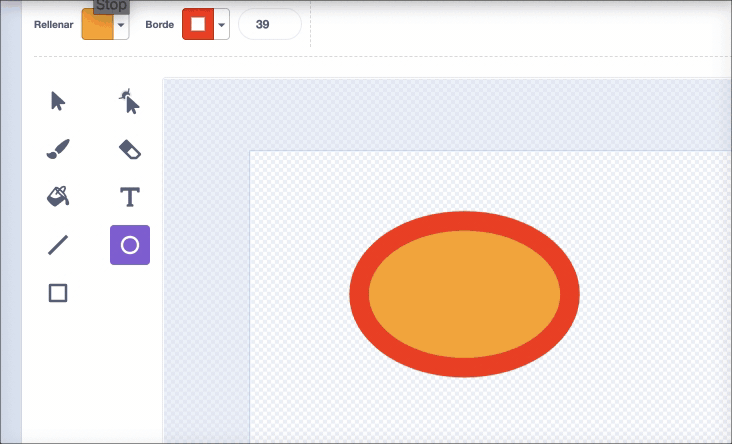
Centrar
Es muy importante que, cuando dibujes un objeto cualquiera en Scratch, te preocupes de centrarlo correctamente. El "punto de mira" que tienes en el centro de la zona de dibujo es el indicativo del centro de tu personaje.
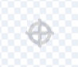
Es importante que esa pequeña cruz quede justo en el centro de tu dibujo, o tendrás problemas al girar a tu personaje en la pantalla.
Ordenar
Es posible que debas usar las herramientas Adelante y Atrás para mover tus formas hacia adelante o hacia atrás para que estén colocadas correctamente dentro de tu imagen:
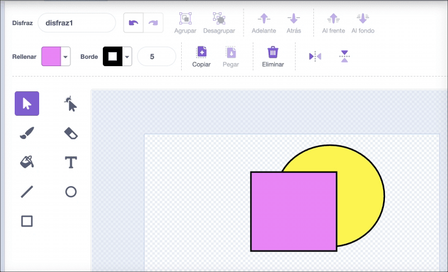
Agrupar
Cuando vayas dibujando partes que van juntas, puedes agruparlas para que se muevan como si fueran una sola y te sea más fácil moverlas o cambiarles el tamaño. Si te arrepientes, siempre puedes volver a desagruparlas para modificarlas por separado, pulsando en Desagrupar:
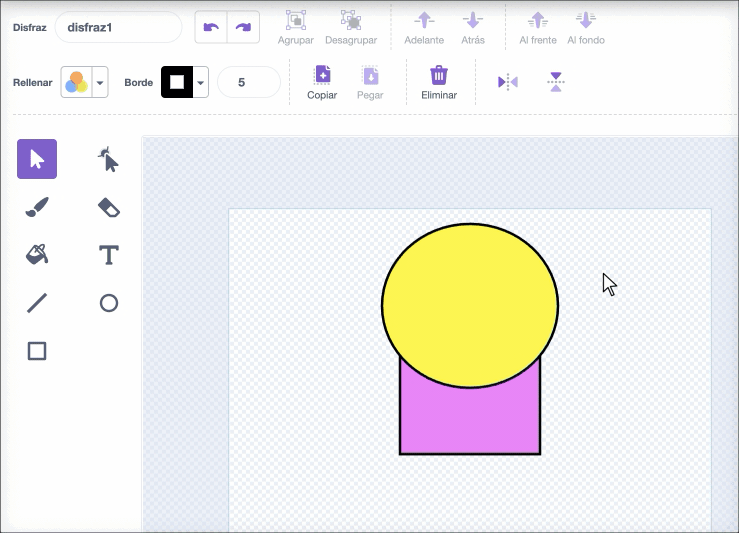
Fíjate que, para seleccionar las dos formas la vez, solo hay que dibujar un rectángulo que toque a las dos con la herramienta seleccionar.
Por último, te dejo un ejemplo de un personaje dibujado utilizando únicamente las herramientas Círculo y Rectángulo. Puedes pulsar en Ver dentro para ver cómo está hecho:
Si es necesario, puedes cambiar el tamaño de tu personaje utilizando las propiedades de Scratch, como ya has aprendido a hacer en los proyectos anteriores. Acuérdate de los ejemplos que has visto, ¡tu personaje debe quedar con un tamaño bastante grande!
IMPORTANTE: no le des detalles a los ojos de tu personaje todavía, simplemente marca su posición con dos círculos pequeños, porque los ojos los vas a crear por separado para que se puedan mover.
Diseña el fondo
Para este proyecto el fondo también debe ser original, pero en esta ocasión, vas a utilizar como punto de partida alguna imagen de fondo que encuentres por Internet. Así aprenderás a usar una imagen cualquiera en tus proyectos de Scratch.
Lo primero de todo es encontrar una imagen que te guste para el fondo de tu proyecto. En principio, se te podría ocurrir buscar cualquier imagen en Google y usarla, pero debes tener cuidado de no utilizar imágenes sin permiso de su autor. Como no vas a estar localizando al autor de cada imagen y escribiéndole a ver si te da permiso, lo más fácil es usar imágenes cuyos autores ya permitan usarlas libremente. Esas imágenes son imágenes libres de derechos, o bien imágenes con licencia Creative Commons.
En este enlace a la web Pixabay puedes buscar imágenes gratuitas que puedes utilizar. Usa el buscador para localizar una que te guste y descárgala en el ordenador.
NOTA: Para que la imagen quede bien como fondo de Scratch, su resolución debe ser mínimo de 480x360 pìxeles. Si es mayor, no hay problema, pero no descargues imágenes mas pequeñas porque se verán muy mal.
Para añadir la imagen como fondo a tu proyecto de Scratch, sólo tienes que seleccionar la opción Cargar un fondo que aparece al pasar el ratón sobre el botón de añadir fondo:
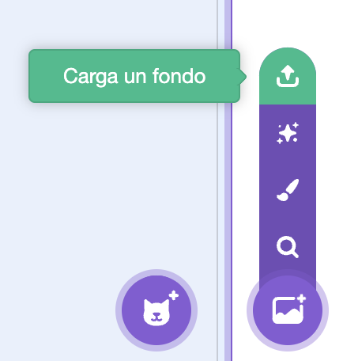
Selecciona la imagen que has descargado (seguramente estará en la carpeta Descargas del ordenador) y aparecerá automáticamente como fondo de tu proyecto de Scratch.
Lo normal es que la imagen que hayas elegido no tenga exactamente las proporciones de un fondo de Scratch. En ese caso, puede quedar espacio en blanco en los laterales o bien arriba y abajo. Para solucionar esto, tienes que hacer lo siguiente:
- Convertir primero la imagen a vector
- Redimensionarla arrastrando alguna esquina
- Centrarla de nuevo si te ha quedado desplazada
Te dejo un ejemplo para que lo veas claro:
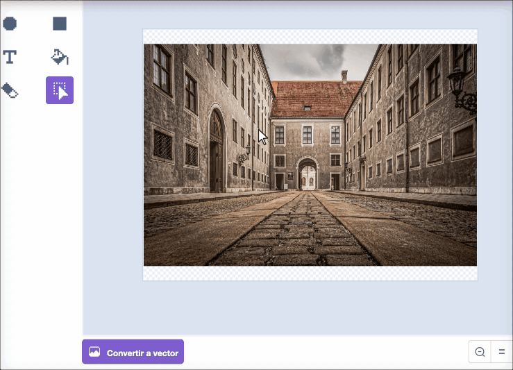
La imagen de fondo que hayas usado también la puedes modificar añadiéndole texto o formas geométricas. Puedes personalizar este proyecto a tope. ¡Aprovecha para dar rienda suelta a tu creatividad!
Crea los ojos locos
Ha llegado el momento de añadirle vida y diversión a tu personaje. Vas a crear los "ojos locos" que se moverán siguiendo el puntero del ratón.
Sigue las instrucciones de cada paso para guiarte en esta fase.
Dibuja un ojo tonto
Los ojos van a ser objetos de Scratch. Como vas a dibujarlos, lo que harás será añadir un nuevo objeto dibujado (lo mismo que hiciste para crear el objeto de tu personaje)
Para que el ojo funcione correctamente sigue estos pasos:
Selecciona la herramienta Círculo. Para dibujar un círculo perfecto, mantén presionada la tecla Mayúscula en el teclado mientras dibujas con la herramienta Círculo. Dale al círculo el color de fondo y contorno que quieras. Te dejo un ejemplo en el que se va a poner el contorno en negro y el fondo con un degradado de colores:
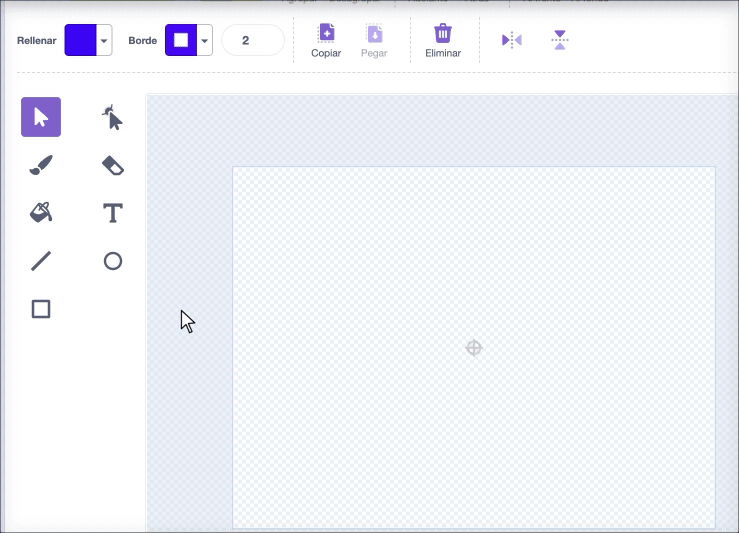
Tienes que asegurarte de que el ojo está perfectamente centrado:
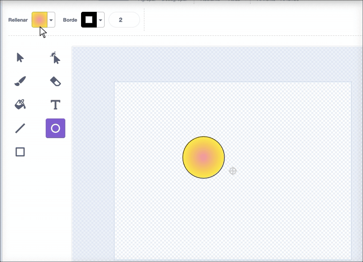
Para dibujar la pupila podemos dibujar un círculo más pequeño y jugar con el grosor del borde y los colores. Es muy importante que la pupila la coloques a la derecha del ojo para que todo funcione bien y el ojo "mire" hacia el puntero del ratón:
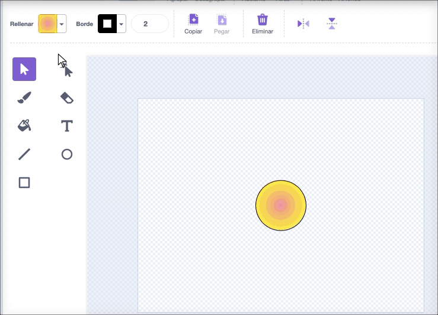
Ponle nombre a tu ojo (por ejemplo, Ojo1) y modifica su tamaño hasta que quede bien con tu personaje en el panel de propiedades de Scratch:
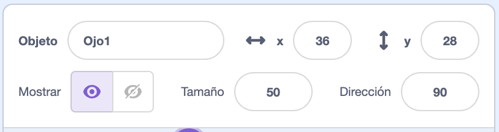
Ya solo te queda colocarlo en su sitio en la ventana de tu proyecto.
Programa tu ojo
Ahora toca programar el ojo para que se mueva solo y "mire" siempre al puntero del ratón. ¿Serás capaz de imaginarte el código por tus propios medios? Inténtalo y no te preocupes si no funciona, te pongo a continuación la solución para que lo arregles, pero si intentas hacer las cosas antes de ver la solución, ¡aprenderás mucho más!
Solución
Este es el código que tienes que poner en el ojo:
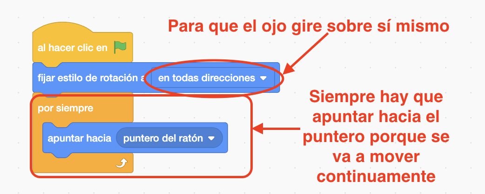
Añade el otro ojo
Como los dos ojos van a ser iguales y se van a comportar igual, no tienes más que duplicar el ojo que ya has hecho (y que espero que hayas probado y que funcione correctamente).
Para duplicar un objeto no tienes más que hacer clic con el botón derecho sobre él y elegir "duplicar" en el menú que aparece.
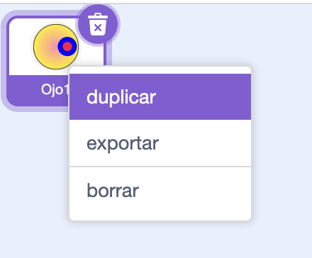
El nuevo objeto será igual y tendrá el mismo código que el original. ¡Hasta se llamará Ojo2 automáticamente! (Si no nombraste el primer ojo a "Ojo1", no te funcionará esto, pero siempre puedes cambiar el nombre en el panel de propiedades)
Prueba tus ojos tontos
Prueba: haz clic en la bandera verde y prueba tu proyecto. ¿Los ojos tontos siguen el puntero de tu ratón cuando lo mueves?
Consejo: no es necesario que mantengas el puntero del ratón en el escenario. Los ojos seguirán el puntero del ratón mientras continúas codificando en Scratch.
Debug: es posible que encuentres algunos errores en tu proyecto que necesites corregir. A continuación, se muestran algunos errores comunes:
Los ojos no se mueven
Asegúrate de haber agregado el código a los objetos Ojo1 y Ojo2 y haber presionado la bandera verde. Tu código no se ejecutará hasta que hagas clic en la bandera verde.
Los ojos apuntan lejos del ratón
Comprueba lo siguiente:
- Para los disfraces del ojo comprueba que la pupila esté al lado derecho (más allá de la cruz azul en el medio del disfraz).
- El código de los objetos Ojo establecen en todas las direcciones como estilo de rotación, por lo que pueden rotar en cualquier dirección.
- Has usado el bloque apuntar hacia puntero del ratón dentro de un bloque por siempre
Los ojos "saltan" por el escenario
Comprueba que los disfraces de Ojo1 y Ojo2 estén centrados. Para centrar un disfraz, arrástralo de modo que la cruz azul se alinee con la gris en el Editor de dibujo.
Los ojos "han desaparecido" de la pantalla
Cuando arrastras un objeto para colocarlo en el escenario, se mueve delante de los demás. Para que tu objeto personaje se quede al fondo y no tape a los ojos, usa este código en el objeto personaje:
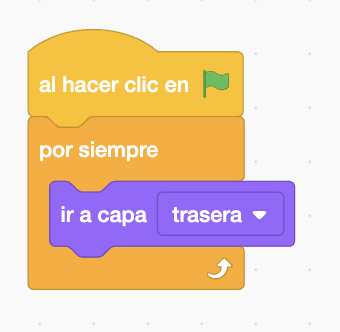
El personaje sigue el puntero del ratón (pero los ojos no)
Necesitas añadir el código apuntar hacia a los objetos Ojo1 y Ojo2, ¡no a tu personaje!
Para copiar el código, puedes arrastrarlo desde el área de Código de tu personaje a los objetos Ojo en la Lista de objetos.
También deberás eliminar el código del personaje. Para hacer esto, arrastra el script al menú de Bloques.
Agrega accesorios y efectos a los objetos
Vas a hacer que tanto tu personaje como sus ojos cambien su Apariencia cuando hagas clic en ellos. Además, añadirás algún accesorio a tu personaje para que tenga más estilo.
Efectos para los ojos locos
Agrega un bloque al hacer clic en este objeto a tu objeto Ojo1.
¿Puedes averiguar qué bloque de código pondrías debajo para cambiar el color de ojos de tu objeto cuando haces clic en el objeto Ojo1? Intenta hacerlo y, si no lo consigues, mira la solución:
Solución
Este es el código que te permite ir cambiando el color del ojo cada vez que hagas clic en él:
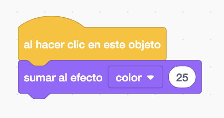
Si quieres que ambos ojos tengan el mismo efecto, tienes que copiar tu script al objeto Ojo2. ¿Te acuerdas de cómo se copiaba código de un objeto a otro? Si no te acuerdas, aquí te lo enseño:
Solución
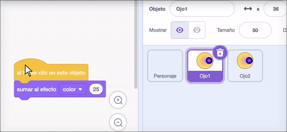
Efectos para el personaje
Haz clic en tu objeto Personaje en la Lista de objetos, luego haz clic en la pestaña Código.
Agrega el mismo script que usaste para cambiar el color de los ojos. Ahora no vas a cambiar el color sino que vas a usar otros efectos. Si despliegas en el bloque sumar al efecto color, puedes ver diferentes efectos que se pueden aplicar a los objetos:
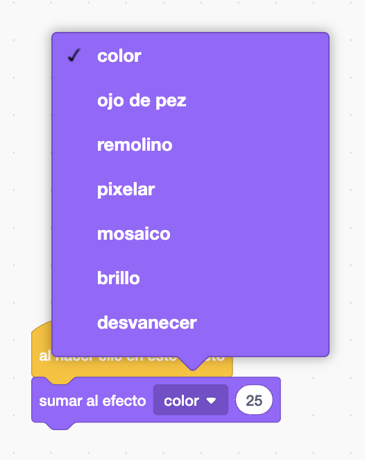
Estos efectos se pueden cambiar de dos formas:
- Dándoles un valor numérico concreto con el bloque
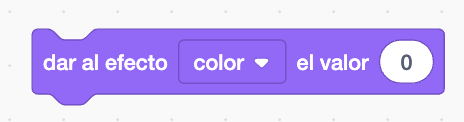
- Sumándole un valor a lo que ya valiera antes con el bloque
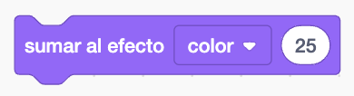
¿Qué efectos gráficos deseas cambiar para tu personaje?
Elige un efecto en el menú desplegable dentro del bloque sumar al efecto color que añadiste. Experimenta con los números hasta que tengas un cambio que te guste. Recuerda probar constantemente tu código haciendo clic en el objeto para ver cómo va cambiando su apariencia.
Te dejo una pequeña guía de los efectos disponibles si necesitas algo de ayuda con esta tarea:
- color: puede tener como valor cualquier número de 0 a 199 (los números más grandes vuelven a comenzar, por lo que 200 es lo mismo que 0)
- ojo de pez: 0 significa que no hay efecto, los números más grandes causan un efecto ‘ojo de pez’ mayor y los números negativos causan un efecto ‘ojo de pez’ inverso.
- remolino: 0 significa que no hay efecto, los números grandes hacen un gran giro hacia la izquierda y los números grandes negativos hacen un gran giro hacia la derecha.
- pixelar: 0 significa que no hay efecto, y los números más grandes crean más píxeles.
- mosaico: 0 significa que no hay efecto, y los números más grandes o negativos afectan el número de copias
- brillo: 0 significa que no hay efecto, los números hasta 100 hacen que el objeto sea más claro y los números negativos hasta -100 hacen que el objeto sea más oscuro
- desvanecer: 0 significa que no hay efecto, y los números hasta 100 hacen que el objeto sea más transparente (con 100 no se vería ya el objeto)
Intenta fijar los diferentes valores de efecto para ver qué hace cada uno. Explora cómo se ve tu personaje con los diferentes efectos y elige algo que quede bien.
No te preocupes si tu personaje se deforma demasiado porque volverá a la normalidad cuando hagas clic en la bandera verde ⚑. Si quieres que vuelva a la normalidad sin tener que pulsar la bandera, también puedes hacerlo utilizando este bloque:
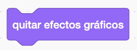
Consejo: También puedes fijar y sumar efectos gráficos para el Escenario. Puedes probar a poner un evento de al hacer clic en el escenario (asegúrate de seleccionar el escenario para poner código en él) y aplicar algunos efectos, a ver qué consigues.Un accesorio
Ahora, agrega un accesorio, como por ejemplo un sombrero o un bolso, que cambie cuando hagas clic en él.
Para ello, haz lo siguiente:
- Agrega un nuevo objeto a tu proyecto y elige el accesorio que más te guste.
- Algunos objetos ya incluyen diferentes disfraces y es posible que el tuyo sea uno de ellos. Aún así, añade varios disfraces más a tu objeto. No hace falta que todos los disfraces sean un sombrero, puedes usar cualquier cosa para adornar a tu personaje. ¡Usa tu creatividad!
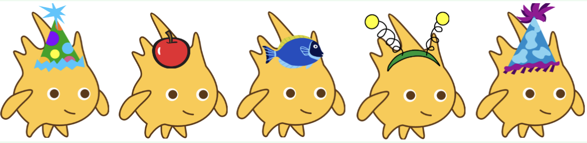
- Usa el bloque siguiente disfraz dentro del objeto Accesorio para ir pasando de un aspecto a otro cuando hagas clic en él.
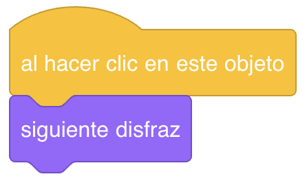
TAREA FINAL. Mejora tu proyecto
Para finalizar tu proyecto, haz lo siquiente:
- Si no lo hiciste antes, agrega algún efecto al escenario que se active al hacer clic en él.
- Añade alguna otra parte del cuerpo a tu personaje que se mueva con el puntero del ratón.
Para inspirarte, te dejo un ejemplo de proyecto de Scratch donde al personaje se le mueven los brazos. Puedes pulsar en ver dentro para ver cómo está hecho:
Recuerda que los objetos giran desde su centro. Si tus elementos no se mueven como deberían, prueba a recolocar los disfraces para situar el punto que quieres que permanezca inmóvil en el centro. Por ejemplo, en el caso de un brazo, el hombro debería estar en el centro del dibujo.
Además, los objetos apuntan hacia la derecha por defecto. Si quieres que un brazo apunte al puntero del ratón, deberás dibujarlo hacia la derecha.
Revisa los disfraces de los brazos del proyecto anterior para verlo más claro.
Como siempre, cuando hayas terminado no te olvides de compartir tu proyecto, añadir el enlace en la tarea de Classroom e incrustarlo en tu Google Site.